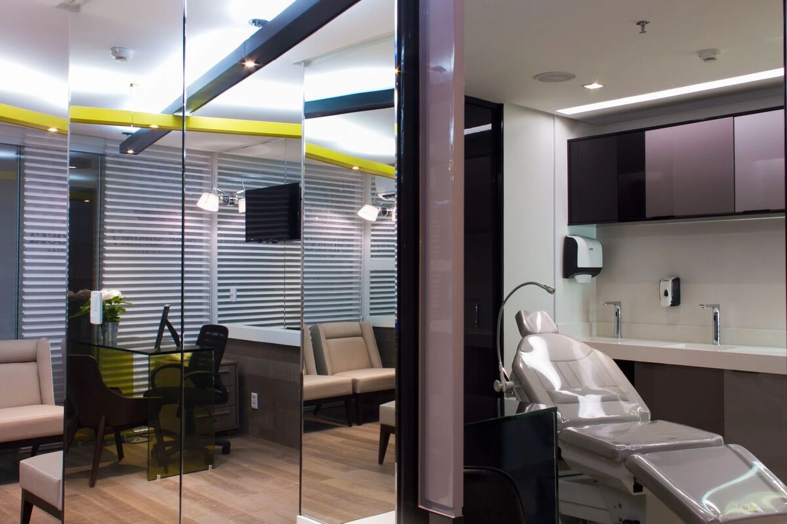
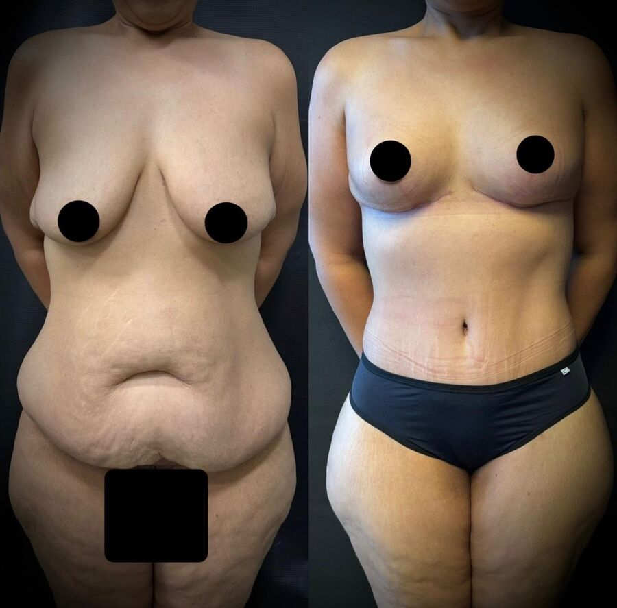
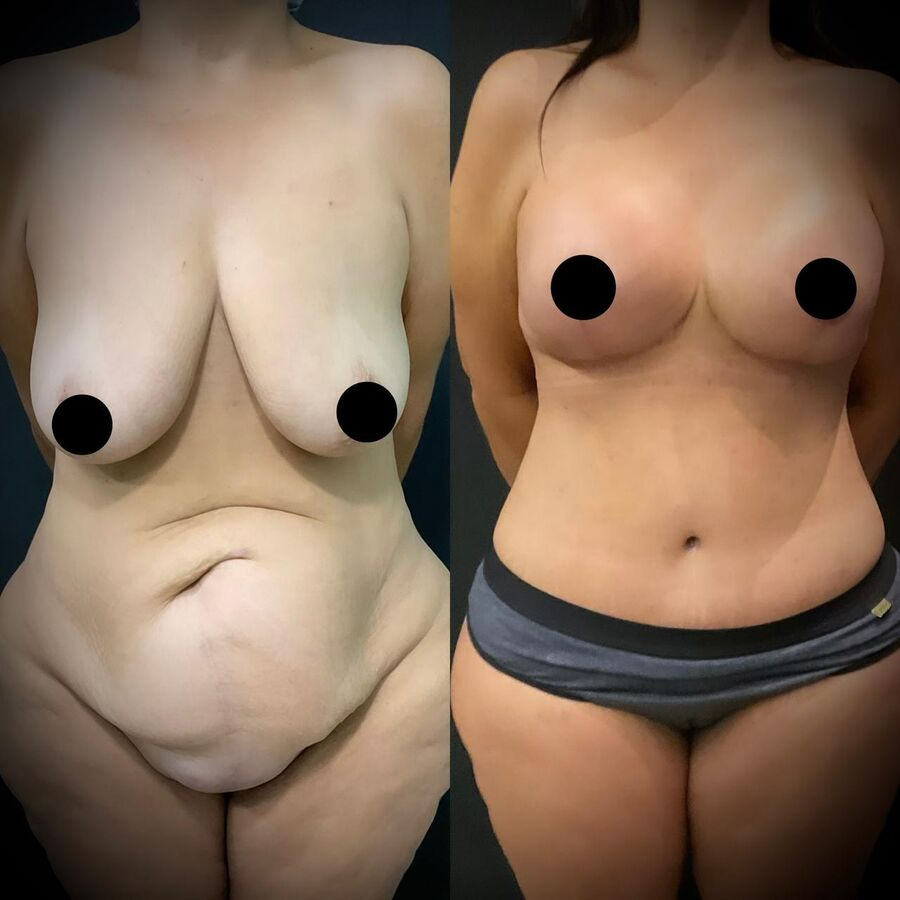
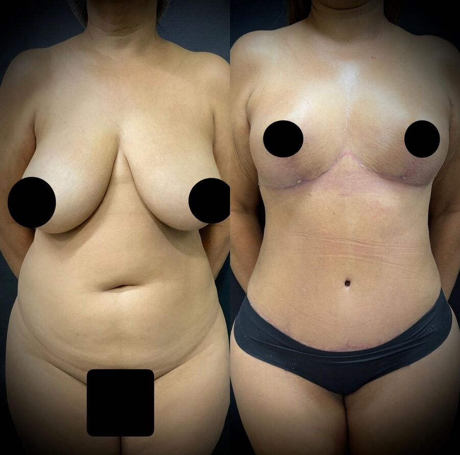
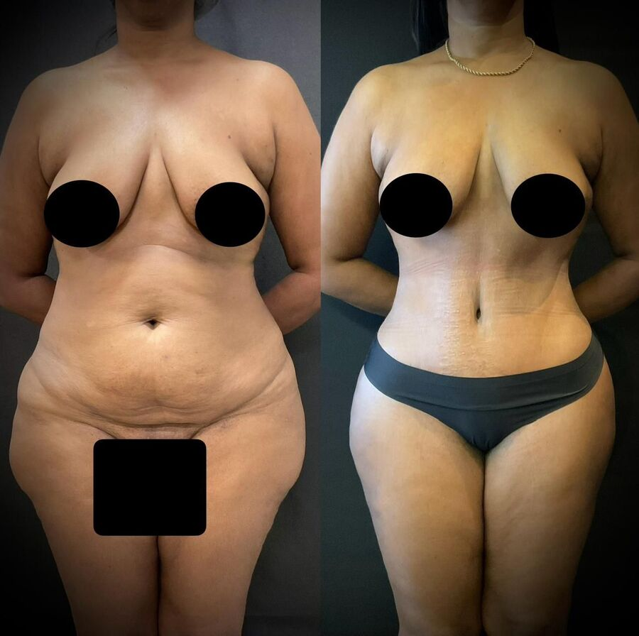
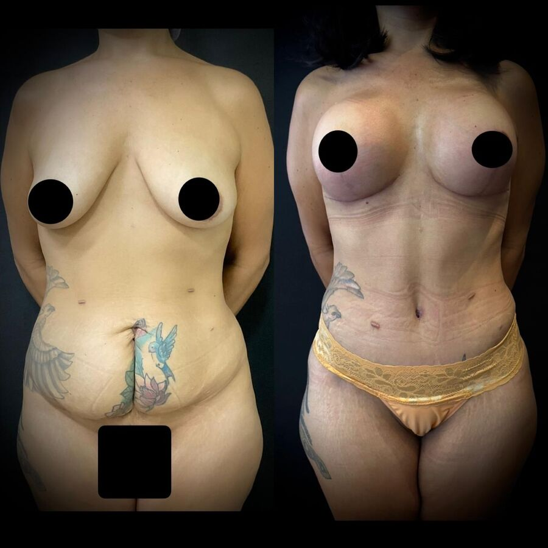
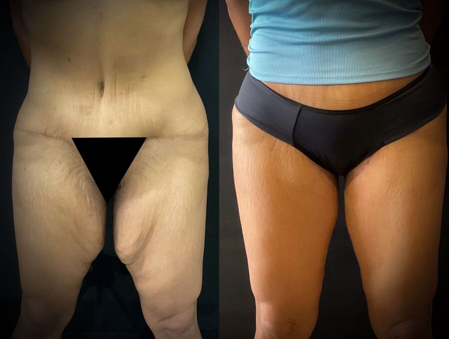
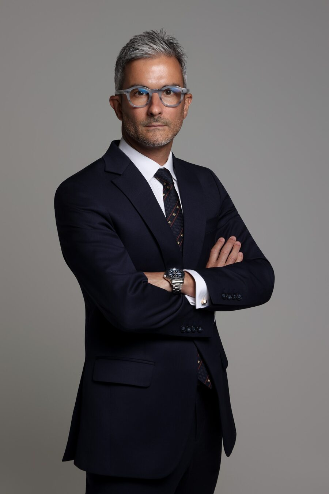
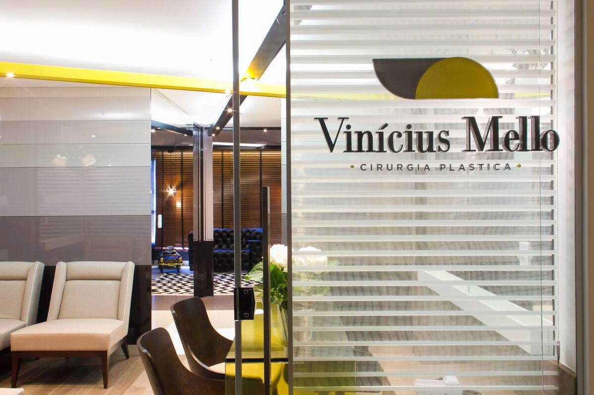
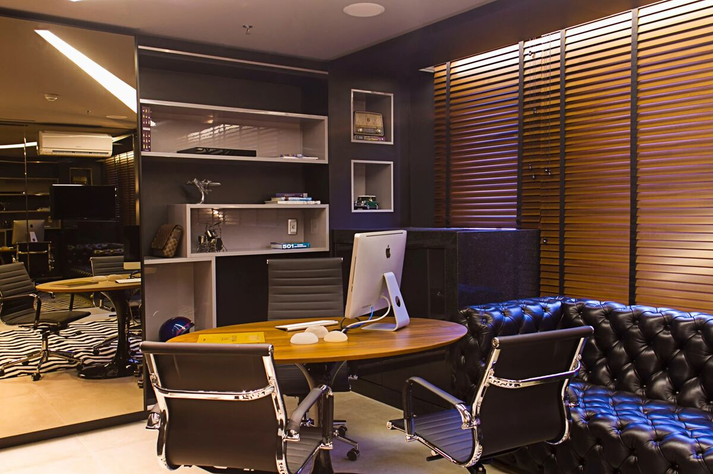

Abdominoplastia
Remove o excesso de pele e gordura abdominal, além de restaurar a firmeza muscular.
Chegou a hora de se sentir bem com o seu corpo novamente. Na consulta de avaliação com o Dr. Vinícius Mello, especialista em cirurgia plástica do contorno corporal e pós-bariátrica, você entende o que pode ser feito no seu caso, com segurança e um plano feito sob medida.
Quero agendar minha avaliaçãoSe você se reconheceu em pelo menos um desses pontos, saiba: você não está sozinha. E o primeiro passo não é a cirurgia, é uma avaliação honesta do seu caso.
Depois de uma gestação ou de uma grande perda de peso, a pele e a musculatura podem ficar distendidas. Dieta e exercício ajudam a reduzir gordura, mas não retiram o excesso de pele nem devolvem a firmeza que o corpo perdeu.
Cada corpo tem um biotipo, uma história e um objetivo. Por isso a primeira etapa é entender o seu caso: o que te incomoda, o que é indicado, o que é possível esperar e como fazer tudo com segurança.
“O espaço clínico é muito bonito. O Dr Vinicius Mello e sua equipe são excelentes. Operei há 13 dias e estou encantada com o pós cirúrgico.”Carina Noronha, avaliação no Google
Remove o excesso de pele e gordura abdominal, além de restaurar a firmeza muscular.
Aumento com prótese de silicone, redução e mastopexia (elevação) para mamas caídas, com ou sem prótese.
Remove a gordura localizada em abdômen, flancos, coxas, culotes e braços. Também com tecnologia de plasma Renuvion, que ajuda a melhorar a qualidade da pele.
Combinação de procedimentos de mama, abdome e lipo para quem quer recuperar o corpo depois da gestação.
Abdominoplastia, torsoplastia e outras técnicas para tratar o excesso de pele depois de uma grande perda de peso.
Braquioplastia e coxoplastia: reduzem o excesso de pele e gordura, melhorando a firmeza e a aparência.
Também são realizadas cirurgias de face, como lifting facial e blefaroplastia (pálpebras).

O objetivo é oferecer um atendimento seguro, individualizado e com orientação médica adequada para cada paciente.

AntesDepois
AntesDepois
AntesDepois
AntesDepois
AntesDepois
AntesDepoisImagens publicadas com autorização. Os resultados variam de pessoa para pessoa, conforme o biotipo, o procedimento indicado e os cuidados no pós-operatório.
★★★★★“Fiz abdômen e mama há 5 dias, não senti dor e sim desconforto devido à própria cirurgia... feliz com o meu resultado, atenção dele e equipe... obrigada Dr Vinicius!”
Joelma
★★★★★“Excelente médico, atencioso, lugar lindo, ótimo atendimento. Fiz cirurgia com ele e amei o resultado!!!”
Aline Oliveira Chaves
★★★★★“Superou todas as minhas expectativas. Trabalho de excelência!”
Edisleila Teixeira da Silva
Avaliações publicadas no Google.
Conversamos sobre o que te incomoda, suas gestações, perda de peso, saúde e expectativas.
Exame das áreas que você quer tratar, considerando o seu biotipo e o seu objetivo.
Você entende quais procedimentos são indicados no seu caso e o que é possível esperar.
O plano cirúrgico é elaborado para você, e o orçamento é definido a partir dele.

Cirurgião Plástico · CRM 10.251 GO · RQE 7.041
Natural de Goiânia, onde nasceu não só a sua história, mas também o seu propósito: transformar vidas através da cirurgia. Formou-se em Medicina no Rio de Janeiro, especializou-se em São Paulo em Cirurgia Geral e Cirurgia Geral Avançada, com experiência em Terapia Intensiva, e conquistou o título de especialista em Cirurgia Plástica no Hospital Felício Rocho, em Belo Horizonte.
“Meu compromisso é cuidar de cada paciente de forma única, respeitando histórias, expectativas e sonhos, porque não se trata apenas de estética, mas de autoestima, confiança e transformação.”


A clínica: espaço amplo, moderno e confortável no Setor Bueno, em Goiânia.
Consulta de face pela Unimed: não há cobrança de bioimpedância.
O sinal não é desconto: ele faz parte do valor total e é abatido dele. Você paga o sinal pelo WhatsApp, quando nossa equipe confirmar o seu horário.
Av. T-10, n. 208, sala 1210 · Ed. New Times Square · Setor Bueno · Goiânia – GO
Você será direcionada para o nosso WhatsApp para escolher o seu horário em
O valor da cirurgia só é definido depois da consulta de avaliação. Como cada paciente tem biotipo, objetivos e necessidades únicas, o plano cirúrgico é elaborado sob medida, e o orçamento é feito a partir dele.
Particular: R$ 1.000. Para reservar o horário você paga R$ 500 de sinal, que são abatidos, e os R$ 500 restantes no dia da consulta. O sinal não é desconto: o total continua sendo R$ 1.000.
Sim. Pela Unimed, a consulta é coberta pelo plano e você paga apenas o exame de bioimpedância, de R$ 300: R$ 150 de sinal para reservar o horário e R$ 150 no dia. Nas consultas de face pela Unimed não há cobrança de bioimpedância.
Sim. A consulta de avaliação é feita pelo Dr. Vinícius Mello, cirurgião plástico especialista pela SBCP (CRM 10.251 GO · RQE 7.041).
Todo o planejamento pré-operatório pode ser feito de forma digital, com agilidade e segurança. O deslocamento para Goiânia acontece apenas para a realização do procedimento, e a equipe cuida da organização logística, com um serviço de concierge para a sua estadia.
Muito mais que uma avaliação inicial, o Dream Day é um dia dedicado a entender suas metas pessoais. É nessa etapa que se desenha todo o seu cronograma cirúrgico de forma personalizada, organizando cada fase do processo.
Cartão de crédito em até 10 vezes, ou plano programado: pagamento de um sinal (entrada) e quitação do saldo restante via PIX ou transferência bancária até o dia da cirurgia.
Em Goiânia, no Setor Bueno: Av. T-10, n. 208, sala 1210 (12º andar), Edifício New Times Square, esquina com a Rua T-27. CEP 74.223-060.
Ainda com dúvidas? Fale com a gente no WhatsApp